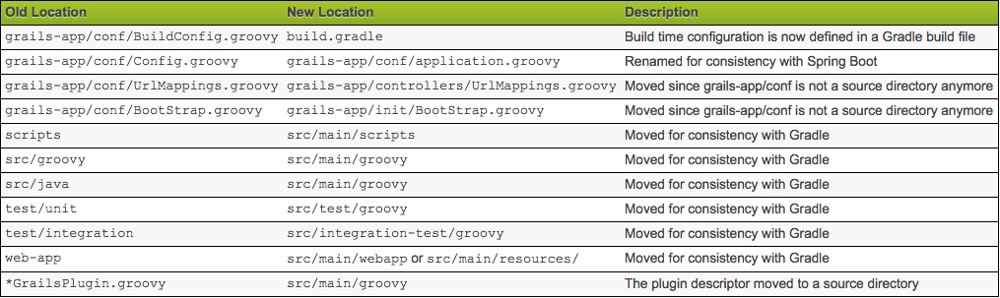
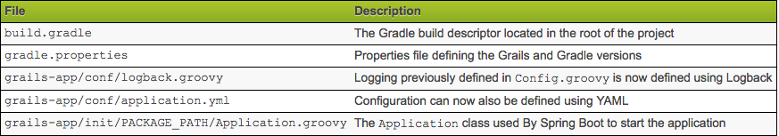
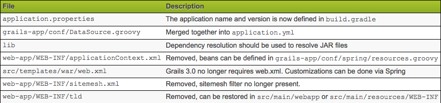

Grails
Grails Tutorial
• Tutorial link reference: http://grails.asia/
Introduction
What is Grails?
Grails is an open source web application framework that uses the Apache Groovy programming language (based on Java). It is intended to be a high-productivity framework by following the "coding by convention" paradigm, providing a stand-alone development environment and hiding much of the configuration detail from the developer.
Benefits
- Convention over configuration ushers in abundant productivity for the developers.
- Grails enables you to write DRY code. If you have any existing Java code, reusing it in Grails should be no problem.
- Developers don’t need to write all the plumbing/boilerplate code with Grails. Here, developers have a big relief as they can concentrate more on turning your ideas into applications instead of chasing after configuring the framework components.
- As it is free of XML configuration, the Groovy on Grails can help you to develop the application in real time.
- Grails supports scaffolding. This helps developers to create applications with CRUD functionalities- Create, Read, Update and delete.
- Simple and easy to maintain code.
Migration
Grails 3.0 is a complete ground up rewrite of Grails and introduces new concepts and components for many parts of the framework. When upgrading an application or plugin from Grails 3.0 there are many areas to consider including: For step-by-step migration guide click [here]
The migration of Grails app version 2 to 3 can be done with helpful links.
To summarize the video, there are three main changes:
- Different file directories
- Merged files
- Deleted files
There are also more changes as follows:
Removal of dynamic scaffolding from Grails 3.0.0 till 3.0.4 when it was re-introduced Removal of before and after interceptors Project structure differences File location differences Configuration differences Package name differences Legacy Gant Scripts Gradle Build System Changes to Plugins Source vs Binary Plugins
The biggest suggestion from the video is installing a fresh, new grails 3 app and migrating from the original grails 2 app instead of trying to make the changes in the original app. This will create a clean migration platform.
After the migration, you must test intensively to catch any unexpected errors.
<<<<<<< HEAD
PEGR Upgrade Notes (Grails 2.5.5 -> 3.3.5)
Written by Pierce Chaffin Last Updated 06/27/18
This is not all inclusive of bugs you will encounter however I am working to add those as soon as I can Notes:
Initial Migration of Files

- First Step is to create a new grails project in grails 3.3.5 in a new directory.sdf
- Next is to migrate all relevant files to their new homes in the new file hierarchy in grails 3.x
Start with the source files
$ cp -rf ../old_app/src/groovy/* src/main/groovy
$ cp -rf ../old_app/src/java/* src/main/groovy
$ cp -rf ../old_app/grails-app/* grails-app
Then migrate all test files
$ cp -rf ../old_app/test/unit/* src/main/groovy
$ cp -rf ../old_app/src/java/* src/main/groovy
$ cp -rf ../old_app/grails-app/* grails-app
-
Now that was it for the easy segments … onto all the configuration files and reorganization
-
For starters lets migrate all dependencies from BuildConfig.groovy to the new build.gradle file
-
(Mind you all of these plugins have new names and access locations as codehaus and other packages no longer exist)
-
Ex: As the lib directory no longer is directly supported do this …
compile fileTree(dir:'lib', include:'.jar')
Additionally, going back to codehaus
-
org.codehaus.groovy.grails. has been migrated to grails.code.GrailsApplication.*
- At this point in terminal we are going to want to resolve controller dependencies as well as some domain dependencies
Do this by running
$ grails compile
Do this quite a few times, looking at the stack trace and resolving as you go
- First issue you will probably encounter is that of @grails.validation.Validateable
- This is no longer in Grails 3 and needs to be changed to a class implementation
class XXXX implements grails.validation.Validateable()
A few other notes with regards to syntax … a few packages in grails have changed simply in terminology .. i.e. j_username is now simply username in Spring Security Core (auth.gsp)
 
- Once you compile successfully you can try to run-app but almost assuredly will find that this doesn’t work
- Next comes the configuration files … Start by moving URLMappings.groovy to the controllers directory
- And then change Config.groovy to application.groovy
- And then it is up to you (I went with the YAML file) as to where you want to merge in your DataSource.groovy (Either into application.yml or application.groovy
- Delete log4j from the application.groovy file
- Migrate the URLInterceptMapping to the new formatting and change it to a static rules mapping
Run
$ grails s2-quickstart User Role
Past this, a lot of functionality might still not work as some dependencies are still not lining up properly
- At this point the concept of the security in Grails being different in defaults is the largest obstacle.
- In grails 3.x, by default all pages are inaccessible unless explicitly notated in the static rules of the application security for specific rules.
- Thus, as shown below make a mapping for every page with rules with regards to User Roles.
[pattern:'/report/togglePreferredAlignment/**', access:['ROLE_ADMIN']],
=======
Spring security
Refer to the Spring Security Core Plugin - Reference Documentation here
d7cf8eeeef811a039bc3f3a4ae1112b586279fda